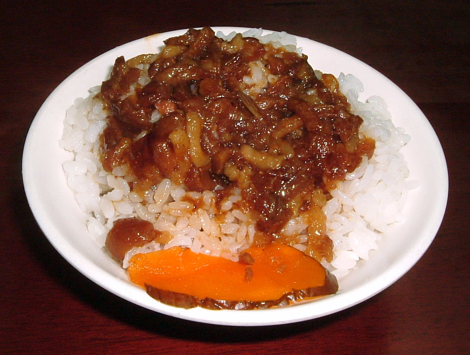

Lu Rou Fan

Description
Lu Rou Fan (滷肉飯), also known as braised pork rice, is a rice dish that is commonly seen throughout Taiwan and Southern Fujian.
The flavor may vary from one region to another, but the basic ingredients remain the same: ground pork marinated and boiled in soy sauce served on top of steamed rice. It is a type of gaifan, or low cost, dish.
Ingredients
- 1 lb skin-on pork belly (450g, cut into 1/2” pieces)
- 2 teaspoons oil
- 0.9 oz. rock sugar (25g, or about 1/2 tablespoons granulated sugar)
- 1 small onion or a couple of shallots (diced)
- 8 shiitake mushrooms (diced into 1/2” pieces)
- 1/4 cup shaoxing wine (60 ml)
- 3 tablespoons light soy sauce (45 ml)
- 2 tablespoons dark soy sauce (30 ml)
- 2 cups water (475 ml)
Steps
-
Bring a medium pot of water to a boil (just enough so that the pork will be fully submerged), and blanch the chopped pork belly for 1 minute. Drain, rinse clean of any scum, and set aside.
-
Heat the oil in a wok over low heat, and add the sugar. Cook the sugar until it starts to melt and then add the onions. Turn up the heat to medium high and stir-fry the onions for a minute. Add the mushrooms and stir-fry for another couple minutes.
-
Add the blanched pork, shaoxing wine, light soy sauce, dark soy sauce and water. Stir and bring the mixture to a boil. Once boiling, add the spices (which should be tied in cheese cloth), along with the peeled hardboiled eggs and turn the heat to the lowest setting. Simmer for 1 1/2 hours, stirring occasionally to prevent sticking.
-
At this point the meat should be fall-apart tender. To finish the dish, remove the spice packet and turn up the heat to medium high to thicken the sauce, stirring occasionally. This process should take about 5-minutes. The sauce should be thick enough to coat a spoon, but there should still be plenty of it left. Serve over steamed white rice.